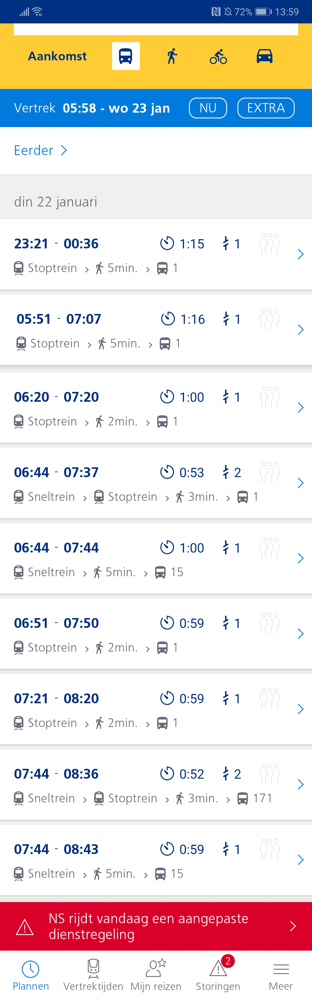

OV Reisplanner App
Beschrijving
De OV reisplanner app van de NS is tegenwoordig niet meer uit ons systeem weg te denken, elke student maakt er gebruik van en kan er bijna niet meer zonder. Alle tijden van bussen en treinen worden daarin live weergegeven, maar werkt dat altijd even goed?
Je ziet vaak toch nog fouten die ervoor zorgen dat er mensen is verkeerde treinen of bussen stappen. Bijvoorbeeld: Een trein is veranderd van spoor maar dit wordt pas op het laatste moment doorgevoerd, meestal wordt dit dan niet op de app weergegeven en al helemaal niet op de borden. Je moet het dan hebben van iemand die de wijzigingen omroept.
Als dit wel in de app wordt weergegeven maar niet op de borden is het gewoon een kwestie van niet doorvoeren naar de borden. Voor ons als programmeurs is het logisch dat wanneer het in de app wordt geüpdatet dat er waarschijnlijk een wijziging is doorgevoerd. Dan hoeven we niet nog eerst op de borden te kijken of het daar ook is doorgevoerd. Deze borden lopen immers vaak achter. (Nerd View)
Voor bussen is er een ander probleem dat verbeterd moet worden, dit is niet de schuld van de app maar meer van de busschauffeurs. In de app staan bepaalde vertrektijden maar er zijn altijd chauffeurs die eerder willen vertrekken. Door dit soort gedrag kloppen de gegevens in de app niet meer waardoor er problemen ontstaan.
Nog een negatief punt over de app komt door een bericht van afgelopen dagen (22-1-2019) over een aangepaste dienstregeling.
Zoals je ziet is er een rode balk verschenen onder aan het scherm deze balk verbergt de mogelijkheid om meer tijden te bekijken en de balk kan niet worden verwijderd. Dit is vreselijk vervelend want hierdoor moet je de tijdsinstellingen veranderen waar veel meer tijd in gaat zitten.